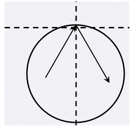

阿 Q 博士正在观察一个圆形器皿中的粒子运动。不妨建立一个平面直角坐标系，圆形器皿的圆心坐标为 $(x_0, y_0)$，半径为 $R$。器皿中有若干个粒子，假设第 $i$ 个粒子在时刻 $0$ 的位置为 $(x_i, y_i)$，速度为 $(v_{x_i},v_{y_i})$（注：这是一个速度向量，若没有发生碰撞，$t$ 时刻的位置应该是 $(x_i + t \times v_{x_i}, y_i + t \times v_{y_i})$ ）。假设所有粒子的运动互不干扰；若某个粒子在某个时刻碰到了器皿壁，将发生完全弹性碰撞，即速度方向按照碰撞点的切线镜面反射，且速度大小不变（如图）。认为碰撞是瞬间完成的。

尽管碰撞不会影响粒子的速率，但是粒子却会受到一定的伤害，所以若某一个粒子碰撞了 $k$ 次器皿壁，那么在第 $k$ 次碰撞时它便会消亡。 出于研究的需要，阿Q博士希望知道从时刻 $0$ 到所有粒子都消亡这段时间内，所有粒子之间的最近距离是什么。你能帮助他么？
第一行包含三个实数，分别为 $x_0, y_0, R$，即圆形器皿的圆心坐标及半径。第二行包含两个正整数 $N, k$，分别表示粒子的总数与消亡碰撞次数。接下来 $N$ 行每行四个实数，分别为 $x_i, y_i, v_{x_i} , v_{y_i}$，保证 $(x_i, y_i)$ 都在圆内且 $(v_{x_i}, v_{y_i})$ 非零。
仅包含一个实数，即所有粒子的历史最近距离，精确到小数点后三位。
0 0 10 2 10 0 -5 0 1 5 0 1 0
7.071
对于所有的数据，$2 ≤N ≤100$，$1≤k ≤100$。 请注意实数精度问题。
 Comet OJ
Comet OJ